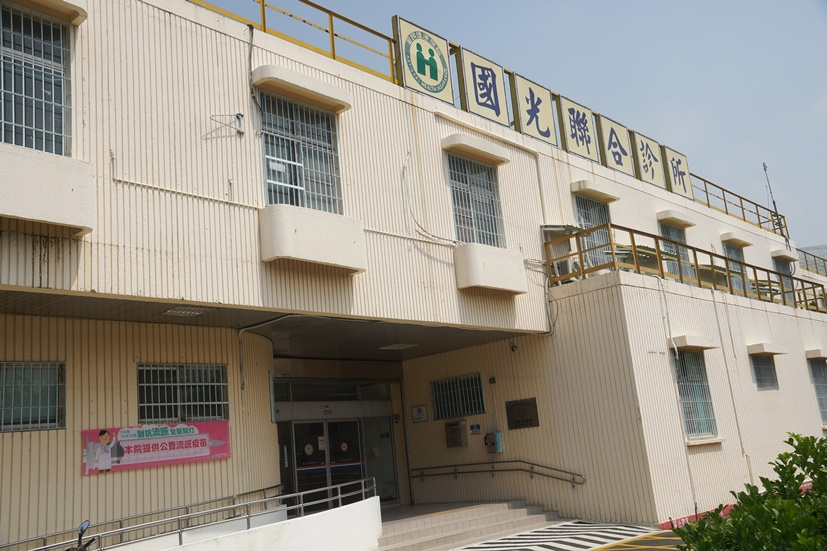

宏毅里簡介
本里主要居民為煉油廠現職及退休員工，環境優良，有公園、活動中心、幼稚園、菜市場等
環境面
國光診所
其他
 高雄煉油廠
高雄煉油廠
高雄煉油廠，簡稱高廠，是一間位於高雄市楠梓區半屏山麓、已停止生產的石油煉製廠，面積廣達262公頃，曾有逾3,000名員工，乙烯年產量達40萬公噸，為台灣中油公司過去最主要的石油煉製廠之一，主要供應仁大工業區及下游工廠的需要，另有面積約209公頃的觀音山油庫、烏材林油庫等輸儲部門。
資料來源：維基百科
 中油冰棒
中油冰棒
中油冰棒以100度蒸餾水製作。 總共8種口味:芋頭/ 花生/牛奶/大花豆(蜜豆)/綠豆/鳳梨/紅豆/桂圓糯米。 每個口味就佔據一個大冰箱來販賣，總共八大冰箱。 據說紅豆冰棒是招牌，只選用來自屏東萬丹紅豆，但煮成紅豆泥的食物艾咪比較不愛說。
資料來源：PopDaily
廢棄宿舍
中油宏南舊丁種雙併宿舍為1940年代日治時期末期宿舍之丁種宿舍，雖經歷70年來日治、國民政府時代替換，仍留存日治時期之原樣(丁種宿舍原型)，具有見證歷史時代意義。其特殊建築風格亦屬當時代之歷史、文化與建築技術上的典範之一，有助於建築技術工法、風格、形式、空間格局之探索與証據的留存，因此有指定古蹟價值。
資料來源：維基百科